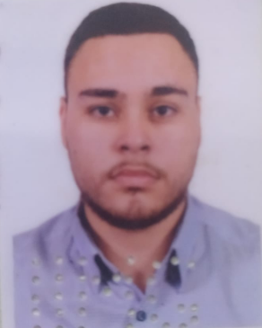

Hugo Toledo Fachinelli

Sumário
Olá! Eu sou um engenheiro formado, porém sou um desenvolvedor apaixonado.
Tenho um forte desejo de melhorar constantemente minhas habilidades e resultados para minha empresa e meus clientes.
Estou empenhado em oferecer a melhor experiência ao usuário e estou animado para ver aonde essa jornada me levará.
Formação
Ensino Médio – Concluído (Escola Estadual Paulo José Derenusson) – Concluído em dezembro de 2014.
Ensino Superior – Graduação em Engenharia Elétrica (Faculdade de Talentos Humanos – FACTHUS) –
Concluído em dezembro de 2020.
Cursos Profissionalizantes
Aprendizagem em Instalações Elétricas Industriais (Serviço Nacional de Aprendizagem Industrial – SENAI) –
Concluído em junho/2016.
(CLP) Controlador Lógico Programável (Serviço Nacional de Aprendizagem Industrial – SENAI) – Concluído
em dezembro/2016.
Algoritmo [40 Horas] Curso em Vídeo.
Python 3 - Mundo 1 [40 Horas] Curso em Vídeo.
Python 3 - Mundo 2 [40 Horas] Curso em Vídeo.
Experiência Profissional
SENAI- U.S.A. USINA SANTO ANGELO – De 07/2015 à 06/2016
- Aprendiz em Instalações elétricas industriais;
- Aprendizado em Instalações Elétricas Industriais, “Programa de aprendizagem Industrial” - conhecimento do
mercado de trabalho.
Hospital de Clínicas/UFTM – De 01/07/19 até 01/09/19
Hospital de Clínicas/UFTM – De 20/05/19 à 28/06/19
Solar Fonte – De 18/11/19 até a 12/07/2021
Solar Fonte – De 12/07/2021 até a 12/10/2021
Analista de dados I
- Auxiliar do setor de monitoramento de sistemas fotovoltaicos;
- Análise diara a geração de energia de cada cliente;
- Geração e análise de relatórios e comparações;
- Elaboração de projetos e diagramas elétricos;
- Elaboração de projetos e diagramas fotovoltaicos;
- Abertura de ordens de serviços para execução de manutenções preditivas, preventivas e corretivas;
- Auxílio e orientações diretas e indiretas para com os técnicos a fim de descobrir possíveis falhas e como aperfeiçoar a geração de energia do local.
Solar Fonte – De 12/10/2021 até a 12/07/2022
Analista de dados II
- Responsável pelo setor de monitoramento de sistemas fotovoltaicos;
- Interação direta com o cliente diaramente;
- Trabalho com garantia de inversores fotovoltaicos;
- Interação direta com fornecedores de sistemas fotovoltaicos;
- Análise e estudo de melhora de produtos e geração dos clientes;
- Análise diara a geração de energia de cada cliente
- Geração e análise de relatórios e comparações
- Elaboração de projetos e diagramas elétricos
- Integração a plataforma SolarZ;
- Geração de relatórios da palaforma SolarZ;
- Análise de relatórios e normas da CEMIG;
- Supervisão de geração de energia e projetos em Condominios residencias;
- Supervisão de micro e mini geração GD;
- Otimização de tempo do serviço dos técnicos eletricistas;
- Criação e Otimização de planilhas em Excell e World para auxilio do setor Operacional;
- Trabalho em conjunto com o setor de engenharia para melhora de vistorias e execução das obras;
- Trabalho em conjunto com o setor operacional e o setor comercial para melhora da relação interpessoal com o cliente;
- Trabalho em conjunto com o setor operacional e o setor comercial para melhora de organização do tempo e dos dias da instalação do sistema;
- Trabalho em conjunto com o setor operacional para melhora de organização tempo e dos dias caso ouvesse algum problema com o sistema ou solicitação de garantia do equipamento;
- Elaboração de projetos e diagramas fotovoltaicos;
- Abertura de ordens de serviços para execução de manutenções preditivas, preventivas e corretivas;
- Auxílio e orientações diretas e indiretas para com os técnicos a fim de descobrir possíveis falhas e como aperfeiçoar a geração de energia do local.
Habilidades
- Atendimento ao Cliente: ⭐️⭐️⭐️⭐️
- Pacote Microsoft Office: ⭐️⭐️⭐️
- Habilidade de organização:⭐️⭐️⭐️⭐️
Informações Complementares
- Inglês – Intermediário;
- Pacote Microsoft Office – Intermediário;
- Habilidade com Power BI - Intermediário;
- AutoCad – Intermediário;
- Carteira Nacional de Habilitação (CNH) – categoria B.
Projeto de Iniciação Científica – X(Décima) Mostra de Talentos FACTHUS julho/2018 a dezembro/2018.
Projeto de Iniciação Científica – “TÍTULO DO PROJETO: Projeto de Pesquisa - kit educacional para estudo
do controle de posição utilizado em dispositivo VANT do tipo asa rotativa” FACTHUS fevereiro/2019 a
junho/2019.
Projeto de Iniciação Científica – “TÍTULO DO PROJETO: Projeto de Pesquisa - kit educacional para estudo
do controle de posição utilizado em dispositivo VANT do tipo asa rotativa” FACTHUS julho/2019 a
dezembro/2019.
Entre em contato comigo